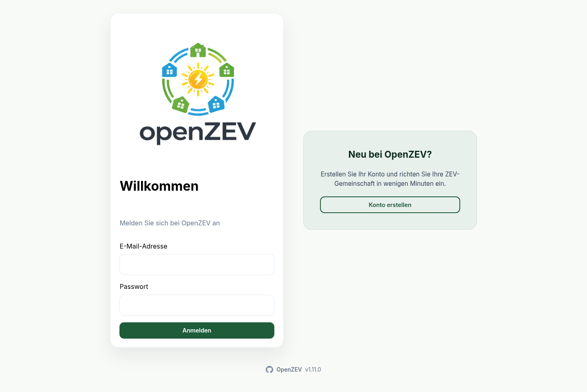
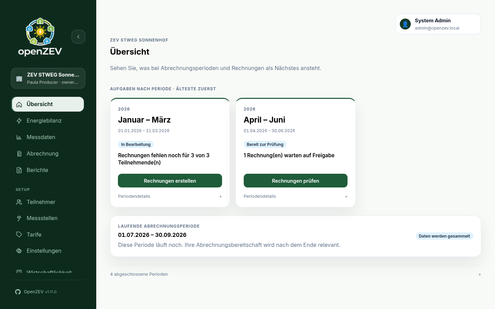
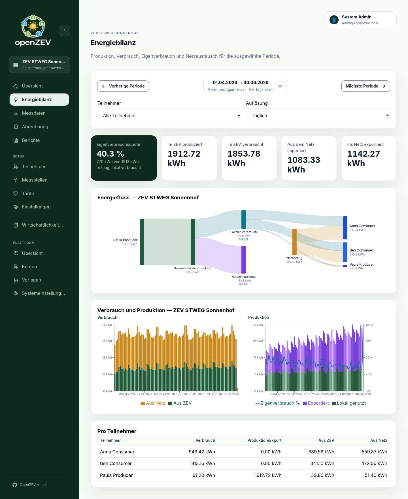
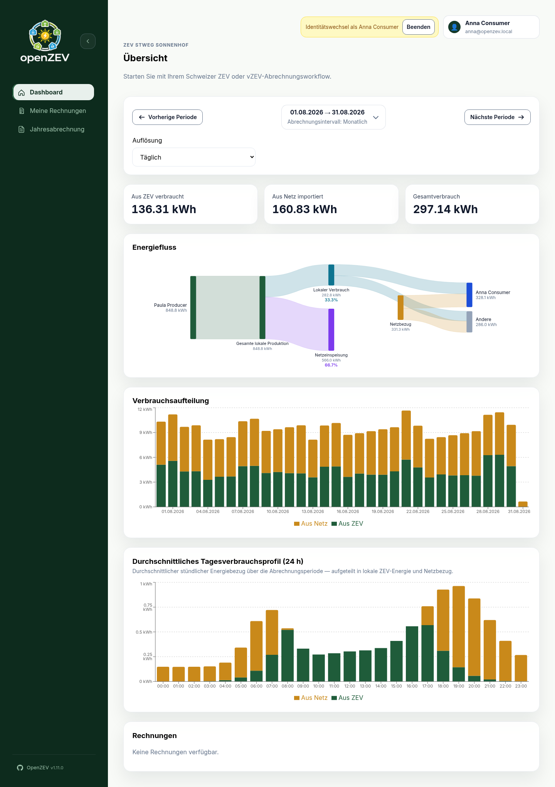
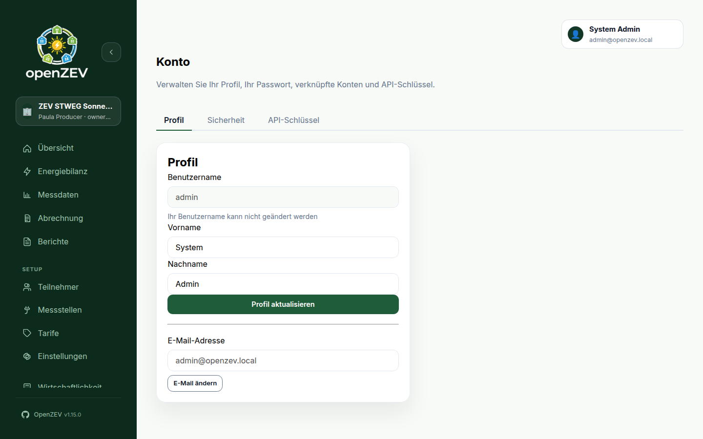

Getting Started with OpenZEV¶
This guide covers installing OpenZEV — as a demo, for development, or for production with Docker Compose or Kubernetes — creating the first admin account, and a first tour of the interface.
Choose an Installation¶
| You want to… | Use | Section |
|---|---|---|
| Try OpenZEV with sample data | scripts/start-demo-environment.sh |
Demo and local development |
| Work on the code | docker-compose.dev.yml |
Demo and local development |
| Run it for a real community on one server | docker-compose.yml |
Production with Docker Compose |
| Run it as one application container | docker-compose.fullstack.yml |
Single-container variant |
| Run it on Kubernetes | Helm chart charts/openzev |
Production on Kubernetes (Helm) |
A production instance starts empty: no accounts, no communities. After installing, create the first admin account.
Prerequisites¶
- For Docker Compose: Docker with the Compose plugin (or Podman with
podman compose), and a copy of this repository (git clone https://github.com/splattner/openzev.git) - For Kubernetes: a cluster,
helm,kubectl, and a PostgreSQL database and Redis instance the cluster can reach - For a public instance: a domain name, TLS termination (a reverse proxy or ingress with a certificate), and an SMTP account for outgoing mail
- Basic familiarity with the terminal
- A modern web browser
Demo and local development¶
Keep frontend, backend, and worker separated for cleaner scaling and easier operations. To start the stack and seed the full demo dataset in one step:
scripts/start-demo-environment.sh
The script creates backend/.env from backend/.env.example (development
defaults) when it does not exist yet, and refuses to run when backend/.env
disables DEBUG (a production configuration) instead of seeding it.
For day-to-day development with live
reload, use the dev stack instead:
cd /path/to/openzev
docker compose -f docker-compose.dev.yml up -d --build
Wait a few seconds for services to start, then access:
- Frontend (UI): http://localhost:8080 (dev stack: http://localhost:5173)
- Backend API: http://localhost:8080/api/v1/ (dev stack: http://localhost:8001)
- Database: localhost:5432 (PostgreSQL, dev stack only)
- Message Broker: localhost:6379 (Redis, dev stack only)
To stop the dev stack:
docker compose -f docker-compose.dev.yml down
Never use either of these for real data: they run with DEBUG=True, and the
demo seed ships well-known passwords.
Production with Docker Compose¶
docker-compose.yml runs the frontend (nginx), the backend (Django +
gunicorn), a Celery worker, one Celery Beat scheduler, PostgreSQL and Redis on
one host. Only the frontend port 8080 is published; nginx proxies /api/ to
the backend, and PostgreSQL and Redis are reachable only on the compose
network. The images are built from your checkout of the repository.
1. Get the code¶
git clone https://github.com/splattner/openzev.git
cd openzev
git checkout vX.Y.Z # pick the newest release tag; main may be unstable
2. Configure backend/.env¶
cp backend/.env.production.example backend/.env
Fill in every value. The examples below assume the instance is reached at
https://zev.example.ch:
| Setting | Example | Notes |
|---|---|---|
SECRET_KEY |
(generated, see below) | The backend refuses to start without it |
ALLOWED_HOSTS |
zev.example.ch |
Bare hostname(s), comma-separated, no scheme or port |
CSRF_TRUSTED_ORIGINS |
https://zev.example.ch |
Full public origin — set it even though CORS stays empty |
CORS_ALLOWED_ORIGINS |
(empty) | Leave empty: nginx serves the UI and the API from the same origin |
FRONTEND_URL |
https://zev.example.ch |
Used for links in emails and for redirects |
EMAIL_HOST, EMAIL_PORT, EMAIL_USE_TLS, EMAIL_HOST_USER, EMAIL_HOST_PASSWORD, DEFAULT_FROM_EMAIL |
your SMTP account | Needed for invitations, password resets and invoice emails — see Email Configuration |
WEBAUTHN_RP_ID |
zev.example.ch |
Bare domain for passkeys; changing it later invalidates every registered passkey |
WEBAUTHN_ORIGIN |
https://zev.example.ch |
Full origin for passkeys |
MFA_ENCRYPTION_KEYS |
(generated, see below) | Encrypts two-factor secrets; without it nobody can enrol an authenticator app |
BACKUP_ENCRYPTION_KEYS |
(generated, see below) | Encrypts backup archives; without it backups are written unencrypted — see Backups |
Generate the three keys with Python (any machine with Python 3; the
cryptography package is only needed for the second line):
python3 -c "import secrets; print(secrets.token_urlsafe(50))" # SECRET_KEY
python3 -c "from cryptography.fernet import Fernet; print(Fernet.generate_key().decode())" # MFA_ENCRYPTION_KEYS
python3 -c "import base64, os; print(base64.urlsafe_b64encode(os.urandom(32)).decode())" # BACKUP_ENCRYPTION_KEYS
Store a copy of all three keys outside the server. Losing
MFA_ENCRYPTION_KEYS makes enrolled authenticator apps unusable, and losing
BACKUP_ENCRYPTION_KEYS makes encrypted backups unreadable.
The backend checks this configuration every time it starts. If a required
value is missing or still points at a development host, the database
migration step stops with an error such as accounts.E003 (hosts),
accounts.E005 (trusted origins) or accounts.E006 (email backend), and the
backend container exits — read it with docker compose logs backend.
3. Start the stack¶
docker compose up -d --build
docker compose ps
The backend applies database migrations on every start. The beat container
may exit once on the very first start, before those migrations have created
its tables; it restarts on its own.
4. Put HTTPS in front of it¶
With DEBUG=False the login and CSRF cookies are marked Secure, so browsers
only send them over HTTPS. Plain http://localhost:8080 works for a quick
check on the server itself, but a public instance needs TLS termination in
front of port 8080 — for example Caddy, Traefik, or an nginx with a Let's
Encrypt certificate — forwarding https://zev.example.ch to
http://127.0.0.1:8080. Open the app at that https:// URL.
The shipped nginx sanitizes X-Forwarded-For and the production stack keeps
NUM_PROXIES=1. If another proxy sits in front of it, audit and rate-limit
identity is therefore the immediate outer-proxy address; do not increase
NUM_PROXIES unless the entire proxy chain is deliberately sanitized and
configured to preserve client addresses.
/media/is never web-served in production — invoice files are served only through authenticated API endpoints.
5. Create the first admin account¶
See Creating the first admin account below.
6. Back up and update¶
- Set up backups of the database and the
backend_mediavolume (invoice PDFs) before billing real participants — see Backups. -
To update, check out the new release tag and rebuild; migrations run automatically when the backend starts:
git fetch --tags git checkout vX.Y.Z docker compose up -d --build
Single-container variant¶
docker-compose.fullstack.yml runs the frontend and backend in one app
container (nginx and gunicorn together); the worker, Beat scheduler,
PostgreSQL and Redis stay separate services. Configuration and HTTPS work
exactly as above:
cp backend/.env.production.example backend/.env # then fill it in as in step 2
docker compose -f docker-compose.fullstack.yml up -d --build
The frontend is on http://localhost:8080. Stop it with
docker compose -f docker-compose.fullstack.yml down. Pass
-f docker-compose.fullstack.yml to every docker compose command for this
stack, and use the service name app where the default stack uses backend.
Production on Kubernetes (Helm)¶
The Helm chart deploys the frontend, backend, a Celery worker, one Celery Beat scheduler, an Ingress and a volume for invoice files. It does not deploy PostgreSQL or Redis — provide both yourself (a managed service or a separate chart).
- Create secrets for the database URL, Django
SECRET_KEY, the SMTP password and the encryption keys (generate the keys as shown in step 2 above). - Write a
values-prod.yamlwith your domain, trusted origins, passkey domain, database and Redis endpoints, SMTP settings and ingress. The chart README has a complete example — start from it. -
Install:
helm repo add openzev https://splattner.github.io/openzev helm repo update helm upgrade --install openzev openzev/openzev -n openzev --create-namespace -f values-prod.yaml
The ingress needs TLS for the same reason as above (Secure cookies), and the
backend runs the same configuration check on start. For every chart value,
including TLS, existing secrets and NUM_PROXIES behind an ingress, see the
chart README.
Creating the First Admin Account¶
A fresh production instance has no accounts, and the login page has no way to
create an admin. Create the first one from the command line with Django's
createsuperuser command, run inside the backend container. It asks for a
username, an email address and a password:
# Docker Compose (docker-compose.yml)
docker compose exec backend python manage.py createsuperuser
# Single container (docker-compose.fullstack.yml)
docker compose -f docker-compose.fullstack.yml exec app python manage.py createsuperuser
# Kubernetes (release "openzev" in namespace "openzev")
kubectl -n openzev exec -it deploy/openzev-backend -- python manage.py createsuperuser
The account gets the admin role. You sign in with the email address, not the username. The password must pass the usual strength checks (at least 8 characters, not entirely numeric, not a common password).
To create the account from a script instead of interactively, pass the password through the environment:
docker compose exec -e DJANGO_SUPERUSER_PASSWORD='choose-a-strong-password' backend \
python manage.py createsuperuser --noinput --username admin --email admin@example.ch
Then:
- Open the instance in the browser and sign in with that email address and password.
- Under Account → Security, turn on two-factor authentication or add a passkey for the admin account.
- Create the other people's accounts in Platform → Accounts → Users, or create a community and its owner with the wizard in Platform → ZEVs — see Platform Administration.
- Decide whether strangers may sign up. ZEV owner self-registration is on by
default: anyone who can reach the login page can register an owner
account and create a community. On a public instance you run only for your
own community, turn it off under Platform → System Settings → Functions,
or set
FEATURE_ZEV_SELF_REGISTRATION_ENABLED=falseinbackend/.env.
Use createsuperuser again whenever you need another admin and cannot sign in
— for example, if the only admin account was locked out.
Demo Accounts¶
A demo dataset is available for testing. It is loaded by starting the stack
with scripts/start-demo-environment.sh, or by running seed_demo on an
already-running stack (see below). It contains two communities owned by the
same owner — the flagship ZEV STWEG Sonnenhof and the smaller
ZEV Sonnenfirma AG — so both sides of the community switcher have real
data to show. Credentials and the full list of what the seed creates are in
the root README.md.
Resetting Demo Data¶
To reload the demo dataset:
docker compose exec backend python manage.py seed_demo
This refreshes demo readings, invoices, import/email logs and audit events for both communities. Issued contract snapshots are retained.
First-Time Setup¶
This tour uses the demo accounts. On a production instance, sign in with the admin account you created above; the pages look the same, just without data.
1. Login¶
- Navigate to http://localhost:8080 (or your instance's
https://URL) - Login with admin credentials (or ZEV owner to manage a community)
- Managers land on Overview; participants land on their personal dashboard
The interface follows your browser's language (German, French, Italian or English). To change it, open the account menu at the top right and pick a Language; the choice is remembered in this browser. Invoice and contract PDFs use the community's own Invoice language instead.

2. Explore as Admin¶
If logged in as admin:
- Go to Platform → Overview to see system-wide KPIs
- View ZEVs, Accounts, Invoices, and System Settings (regional/VAT)
- To work inside a community: open Platform → Overview → ZEVs and click Manage on a row — this selects the ZEV and takes you to its operational Overview. (While under
/adminthe shell shows the Platform administration indicator instead of the switcher.) - The sidebar ZEV switcher (top-left) selects the working community anywhere else; the selected community is shown above the page title on every page, so it stays visible even when the navigation scrolls, the sidebar is collapsed, or you are on mobile
- For keyboard access, open the switcher or account button with Enter or Space, use Tab to move through its options, and press Escape to close it. After selecting a community, focus returns to the switcher. On mobile, Escape closes the navigation drawer and returns focus to its menu button.
3. Explore as ZEV Owner¶
If logged in as a ZEV owner:
- Go to Overview for setup guidance and billing work grouped by period
- Go to Energy balance to analyse production, consumption, self-consumption, and grid exchange for a period
- Go to Settings to configure your community parameters (General · Billing & payment · Documents & emails · Audit log · Export/transfer)
- Go to Participants to view member list
- Go to Metering Points to see participant meters
- Go to Metering for consumption charts, data quality, and import history
- Go to Tariffs to configure energy pricing
- Go to Billing to generate and manage invoices, inspect/retry email delivery, and download statements
- Go to Reports for annual statements and financial summaries


In the participant table, Tab to a name and press Enter or Space to filter the charts; swipe the table horizontally on narrow screens to see every column.
4. View as Participant¶
Login as a participant (Anna or Ben):
- Dashboard shows your energy consumption/production overview
- My invoices lists the invoices issued to you (details + PDF)
- Annual statement shows your yearly statement and financial summary


API Access¶
OpenZEV provides a complete REST API for programmatic access:
- Swagger UI: http://localhost:8080/api/docs/
- ReDoc: http://localhost:8080/api/redoc/
- API Base URL: http://localhost:8080/api/v1/
Development stack (docker-compose.dev.yml) serves the API directly on port 8001.
The API is protected by JWT authentication. Demo credentials work for API access too.
Prebuilt Container Images¶
If you prefer not to build locally, prebuilt images are available on GitHub Container Registry:
ghcr.io/splattner/openzev-backend:latestghcr.io/splattner/openzev-frontend:latestghcr.io/splattner/openzev-fullstack:latest
Tag variants:
latest— newest published releasevX.Y.Z— specific release versionmain— latest development build (may be unstable)
Reverse proxies and NUM_PROXIES¶
NUM_PROXIES defaults to 0, so direct requests cannot choose their own
rate-limit or audit identity through X-Forwarded-For. The default and fullstack
Compose stacks use 1 behind nginx and expose the API through port 8080 only.
The development stack keeps 0 because its backend is directly accessible;
requests through Vite may share a rate-limit bucket. For custom proxies or
Kubernetes, follow the proxy configuration guidance
before enabling trusted hops.
What's Next?¶
- Operators: See ZEV Setup and Configuration
- Data Management: See Metering Imports
- Billing: See Tariff Configuration
- Understanding Roles: See Roles and Permissions
Troubleshooting¶
Services won't start¶
Check Docker logs:
docker compose logs
Can't access frontend¶
- Ensure port 8080 is not in use:
lsof -i :8080 - Check Docker container is running:
docker compose ps
Database connection errors¶
Verify PostgreSQL container is healthy:
docker compose logs db
The database looks empty after switching compose files¶
All three compose files (docker-compose.yml, docker-compose.dev.yml,
docker-compose.fullstack.yml) share the postgres_data volume and mount it at
/var/lib/postgresql/data, with PGDATA pinned to the pgdata subdirectory —
so switching between them keeps one database.
Older revisions mounted that volume at different paths in different files, which gave each stack a cluster the others could not see: starting one, then the other, looked like the database had been wiped. If you are coming from such a setup, the first start after upgrading initialises an empty cluster; see the upgrade note in the README for how to carry data across.
See Troubleshooting for more help.
Disclaimer¶
OpenZEV is built for personal use and self-hosting by tinkerers who enjoy running their own stack. Please double-check your data and billing outputs—we do not take responsibility for incorrect imports, calculations, invoices, or invoicing workflows.
Before using in production:
- Test thoroughly with sample data
- Verify all calculations match your tariff agreements
- Set up regular backups of your database and the invoice PDF files — see Backups
- Review user roles and access controls